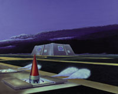
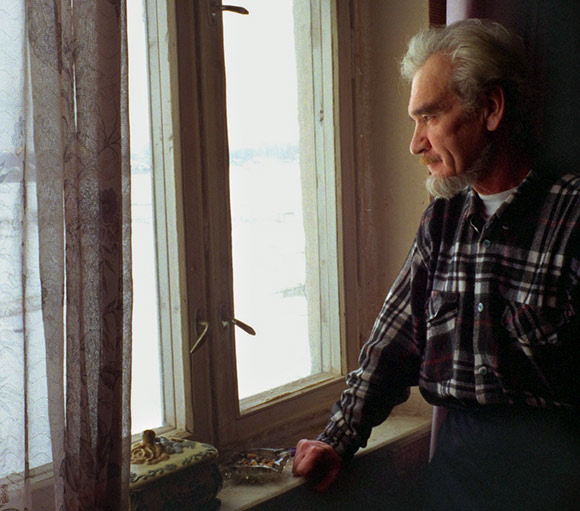

El hombre que salvo al mundo, porque no hizo lo que debía hacer
Era el 26 de septiembre de 1983, el teniente coronel Stanislav Petrov estaba de guardia en , el bunker secreto a las afueras de Moscú que monitoreaba el sistema de alerta temprana satelital sovietico, cuando las alarmas saltaron poco después de la medianoche. Uno de los satélites señalaba que los Estados Unidos habían lanzado cinco misiles balísticos a Rusia.

Las tensiones entre los dos paises eran altas, la alarma coincidía con el principio de unos provocativos ejercicios militares de la OTAN y apenas tres semanas despus que los rusos derribaran un avión civil surcoreano que había ingresado en el espacio aereo sovietico.
Las instrucciones de Petrov eran claras, si el detectaba misiles dirigidos hacia la Unión Sovietica, el debía presionar el botón de lanzamiento de la contra ofensiva.
“Era como en las películas”, dice Petrov, un botón rojo parpadeando esperando ser presionado, excepto que “en las películas, los especialistas de Hollywood y los directores pueden alargar esta pequeña situación hasta una media hora. En nuestro caso, desde el momento que tomara la decisón a cuando todo terminara pasarían cinco minutos, máximo.”
Pero él decidió no hacer nada, tenía un presentimiento de que había algo malo. Y no se equivocaba, meses después, se determinó que las señales eran el resultado de un fallo en el sistema.
El botón de partida, que se esperaba fuera presionado por el comandante Petrov *habría empezado una reacción en cadena irreversible en un sistema diseñado para lanzar un contra ataque sin intervención humana.
“El computador principal no me preguntaría que hacer, estaba hecho de modo tal que no pediría ninguna confirmación. Todo estaba construido de modo tal que nadie pudiera afectar las operaciones del sistema”.
Lo único que podía hacer Petrov era analizar la información disponible y decidir si la alarma era falsa, o dar la partida al computador, siguiendo una directiva que él mismo había escrito.
Pero, ¿por qué Petrov no presionó el botón?
Dos ideas vinieron a su mente:
“No podía creer que sólo nos lanzaran cinco misiles. Cinco misiles no barrerían con nosotros. Los Estados Unidos no tenían cinco, sino que miles de misiles listos para la batalla. No parecía un escenario considerado por la inteligencia militar anteriormente.”

Elsegundo pensamiento en la mente de Petrov, y que el siempre consideraba cuando se encontraba de turno, era este:
“Me imaginé si yo asumiría la responsabilidad de desatar la tercera guerra mundial, y me dije que no, que no lo haría”.
Hay que agradecer a Petrov su gesto, es un heroe desconocido de nuestro tiempo. Pero sobretodo nos muestra que no podemos creer ciegamente en lo “que dice el sistema”.
Al fin y al cabo nosotros somos capaces de pensar, y tomar decisiones que los computadores, por muy sofisticados que sean, y por muy bien programados que estén, aún son incapaces de tomar por nosotros.